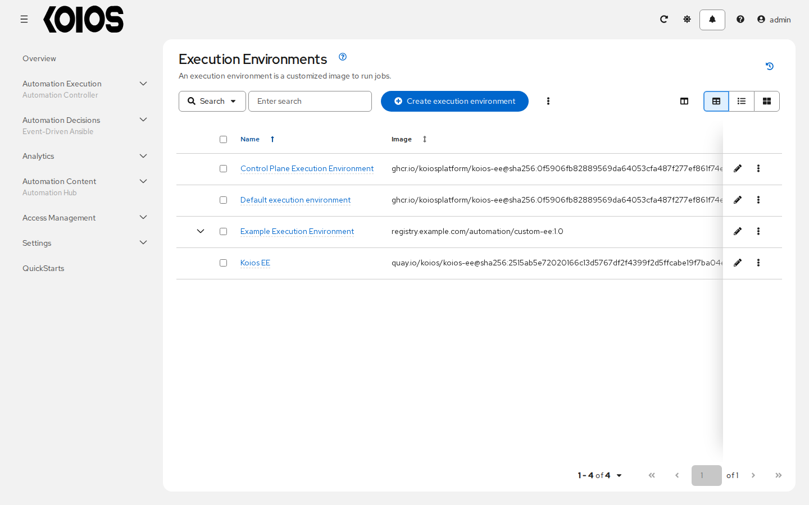
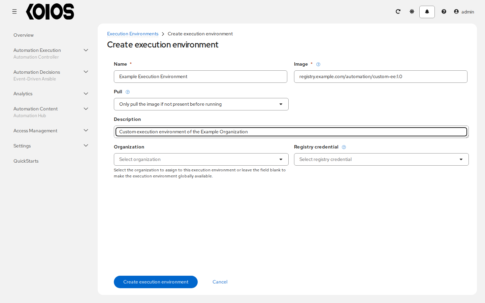
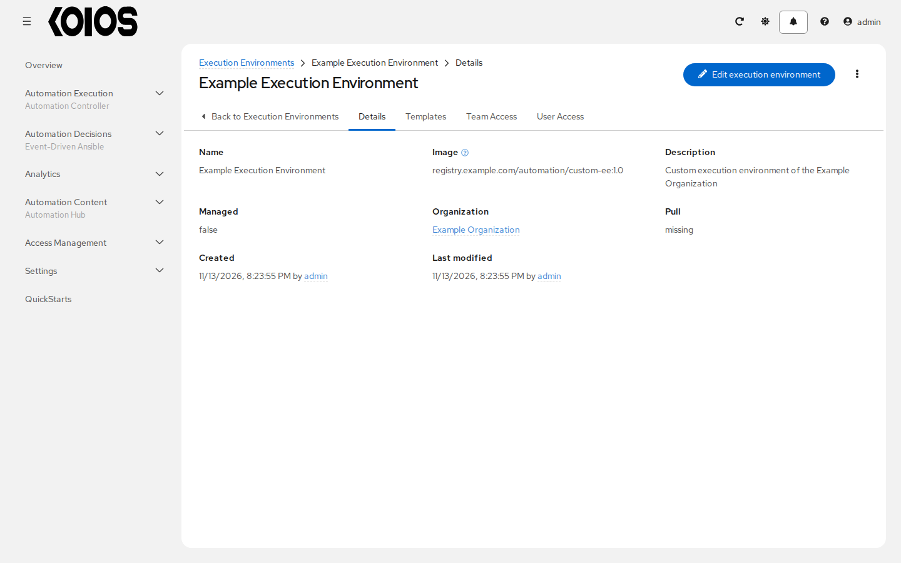
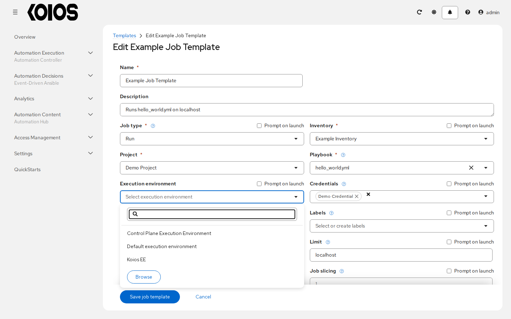
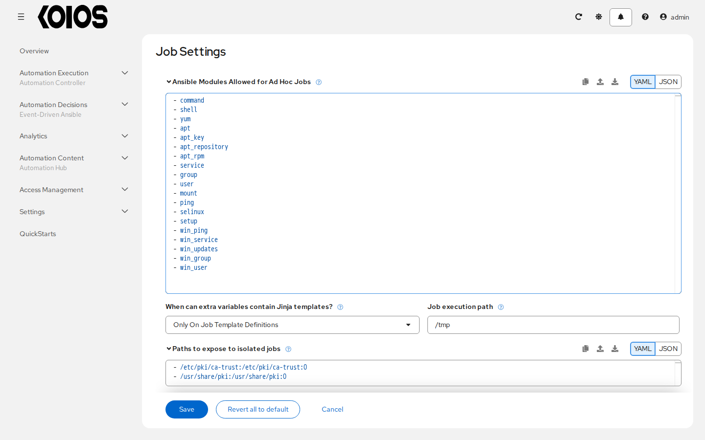
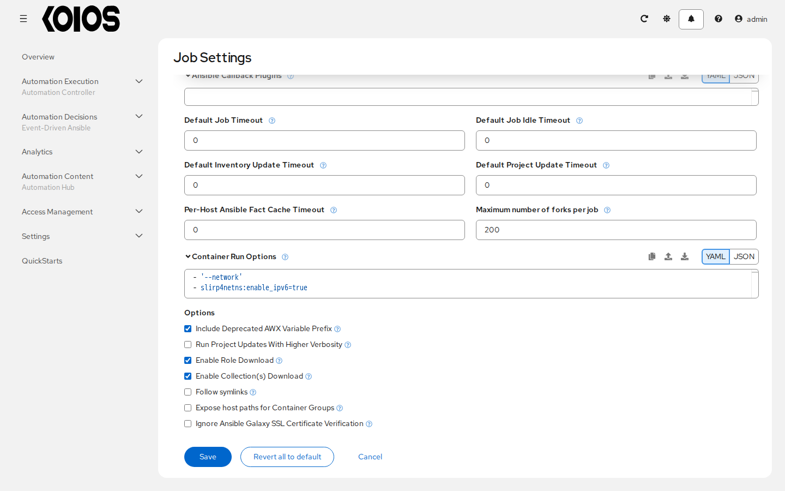

12. Execution Environments
The ability to build and deploy Python virtual environments for automation has been replaced by Ansible execution environments. Unlike legacy virtual environments, execution environments are container images that make it possible to incorporate system-level dependencies and collection-based content. Each execution environment allows you to have a customized image to run jobs, and each of them contain only what you need when running the job, nothing more.
12.1. Building an Execution Environment
The Getting started with Execution Environments guide will give you a brief technology overview and show you how to build and test your first execution environment in a few easy steps.
12.2. Use an execution environment in jobs
Open Automation Execution > Infrastructure > Execution Environments to see the execution environments available. The platform provides the Default execution environment, used by jobs that do not set one, and the Control Plane Execution Environment, used for project updates and other control tasks; both point to the execution environment image of the release (see Releases).

An execution environment without an organization is available globally, to every user who can create or edit templates; an execution environment assigned to an organization is available to the users who can see that organization. Creating an execution environment requires being a system administrator or having the execution environment administration permission of its organization.
To add an execution environment:
Open Automation Execution > Infrastructure > Execution Environments and click Create execution environment.
Enter the appropriate details into the following fields:
Name (required): a name for the execution environment.
Image (required): the full image reference, including the registry, the repository, the image name and a tag or digest, in the format
<registry>/<repository>/<image>:<tag>or<registry>/<repository>/<image>@sha256:<digest>. A digest pins the exact image.Pull: optionally choose when the image is pulled before running a job:
Always pull container before running: pulls the image every time.
Only pull the image if not present before running: pulls it only if the node does not have it.
Never pull container before running: never pulls it; the image must already be present.
Description: optional.
Organization: optionally assign the execution environment to an organization. Leave it blank to make the execution environment globally available; a global execution environment cannot be reassigned to an organization afterwards.
Registry credential: if the registry requires authentication, select a Container Registry credential. In container groups, automation controller creates an image pull secret from it for the job pod.

Click Create execution environment. The details of the new execution environment open; its Templates tab lists the templates that use it, and, for an execution environment of an organization, Team Access and User Access control who can use it.

To use an execution environment in a job template, select it in the Execution environment field of the template. If the field is empty, the job uses the first one set of: the default execution environment of the project, the default execution environment of the organization, the default execution environment of the organization of the inventory, and finally the global default execution environment (the Default execution environment unless another one is set in the Global default execution environment field of Settings > Automation Execution > System). Project updates always use the Control Plane Execution Environment. For more information on setting up a job template, see Job Templates.

12.3. Execution environment mount options
The Paths to expose to isolated jobs field of Settings > Automation Execution > Job lists host paths that are mounted into the execution environment of each job, in the Podman volume syntax <host path>:<container path>:<options>. By default it exposes the system trust store (/etc/pki/ca-trust and /usr/share/pki) so that jobs trust the same certificate authorities as the node. Refer to the Podman documentation for detail on the options.

These paths apply directly to jobs run with Podman on execution nodes. For example, if a customized execution environment includes /etc/ssh/* files and exposing /etc/ssh/ssh_config.d:/etc/ssh/ssh_config.d:O causes an SSH error because the ownership is not mapped correctly, change the ownership of the directory on the node to root and expose it again. The :O option (overlay) is only supported for directories; be as specific as possible, because mounting /etc or /usr directly makes problems difficult to troubleshoot.
Jobs in container groups, the default in Koios Automation Platform, run in pods of the cluster. The same paths are mounted there as hostPath volumes of the Kubernetes node that runs the pod only when Expose host paths for Container Groups is enabled; the cluster must allow hostPath volumes for the service account of the pods.

With that option enabled and the path /srv/data:/data:ro, the pod spec of each job includes:
spec:
containers:
- volumeMounts:
- name: volume-0
mountPath: /data
readOnly: true
volumes:
- name: volume-0
hostPath:
path: /srv/data
Only the ro option is kept (as readOnly); Podman options such as :O, :z or :Z are ignored in pods. In particular, the default paths with :O become writable hostPath mounts of the node, without the overlay protection they have with Podman: use :ro for every path that must be read-only before enabling this option. For storage that is not on the nodes, customize the pod spec of the container group instead (see Container Groups).